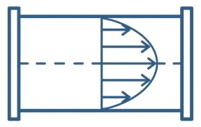
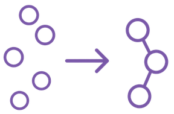
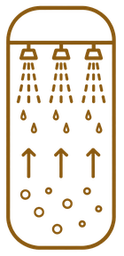
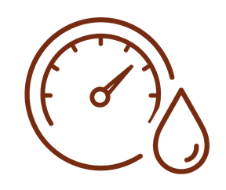
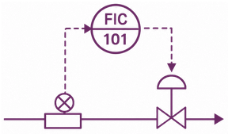

飽和蒸気表、蒸留塔の理論段数、設備費の概算などをブラウザで計算できます。化学メーカーの製造技術者・かねまる（ケムファク）が作成・更新しています。

流動レイノルズ数、管摩擦係数（ファニングの式）、流量・流速の換算、ポンプの計算
反応アレニウスの式、回分反応の時間、CSTR・PFRの設計
吸収ガス吸収の最小溶媒流量・液ガス比
調湿・乾燥湿り空気の状態量（湿度・露点・湿球温度）
計装・制御4-20mA信号の換算（スケーリング・開平）公開準備中の分野：集塵、晶析
有機化学系の研究で修士号を取得後、化学メーカーの生産技術・製造技術・エンジニアリングなどを経験。現在は転職して製造技術の道へ進む。Web記事やPodcastを中心に、外部メディア連載など多方面で技術情報を発信。